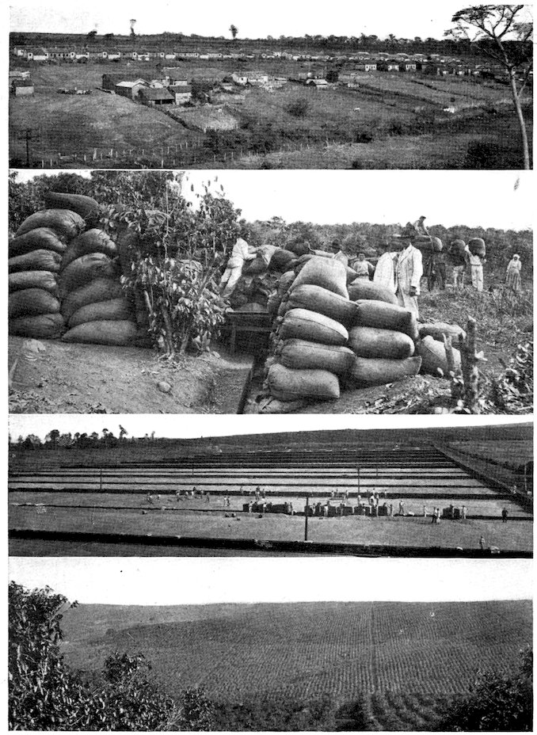

아메리카 / 브라질
브라질 1822 — 독립했는데 왜 황제가 생겼을까
1822년 독립과 군주제 유지, 지역 갈등과 노예제의 지속을 통해 자유의 서로 다른 범위를 살펴봅니다.
이야기 읽기지역과 이야기
북·중앙·남아메리카의 도시와 사람, 변화를 읽습니다.
3편의 이야기
지역과 국가는 이야기를 찾는 길잡이입니다. 과거의 공동체와 문화가 오늘의 국경과 꼭 일치하지는 않습니다.
3편의 이야기
아메리카 / 브라질
1822년 독립과 군주제 유지, 지역 갈등과 노예제의 지속을 통해 자유의 서로 다른 범위를 살펴봅니다.
이야기 읽기
아메리카 / 브라질
1888년 법적 해방과 그 이후의 노동, 토지와 생활의 조건의 배경과 전개, 이후의 변화를 살펴봅니다.
이야기 읽기
아메리카 / 브라질
포르투갈 궁정의 대서양 이동이 항구·기관·도시의 위상을 바꾸다을 이야기로 살펴봅니다.
이야기 읽기조건에 맞는 이야기가 없습니다. 다른 조건으로 찾아보세요.